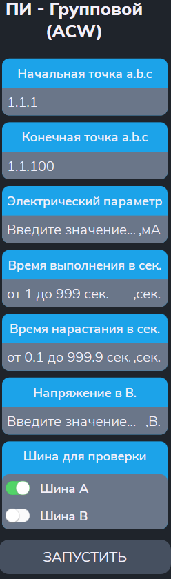

Тест ПИ групповой метод
Тест позволяет проверить прочность изоляции коммутатора напряжением от 100В до 700В для переменного тока и до 1000В для постоянного тока групповым методом.
Сначала появляется меню (см. рисунок 1):

Параметры
- "Начальная точка a.b.c" и "Конечная точка a.b.c" - начальный и конечный адреса диапазона проверяемых точек;
- "Электрический параметр" - задание порогового значения силы тока (в мА);
- "Время выполнения в сек" - времня выполнения (в сек);
- "Время нарастания в сек" - время нарастания до заданного напряжения (в сек).
- "Напряжение" - значение напряжения, которое должно быть выставлено на точки с помощью высоковольтной испытательной установки (в В);
- "Шина для проверки" — заданная шина («A» или «B») для подключения точек.
Алгоритм проверки
Подготовка:
- Установить режим высоковольтной испытательной установки;
- Запустить высоковольтную испытательную установку и проверить прочность изоляции между шинами A1 и B1. При пробое выводится «Замыкание шин A1 и B1» и тест прерывается.
Для каждого разбиения
-
Подключить точки текущего разбиения к выбранной шине,
остальные — к альтернативной.
Разбиение проводится по значению текущего разряда двоичного адреса точек.
Если в текущем разряде адреса 1, то точка подключается к заданной шине, иначе к альтернативной. -
Проверка прочности изоляции изоляции.
Если получен пробой изоляции, то выводится сообщение о браке. - Во время проверки появляется сообщение, например: "Результат измерения разряда: 0000001 [НОРМА (БРАК)]" - где 1 показывает текущий проверяемый разряд.